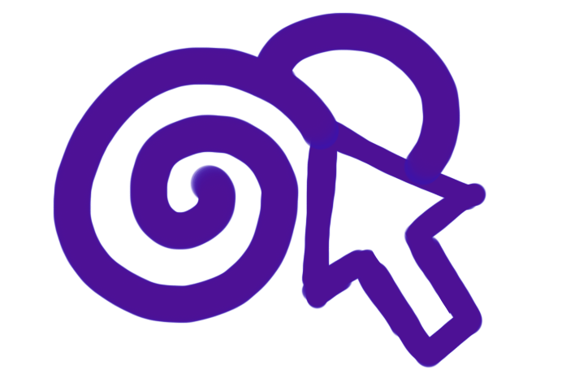

Mission (HydroApps): Inform potential customers that they no longer need to keep track of paperwork and can use an app instead.
See Ad (in the wild)
My Role as Graphic Designer and Content Creator
Step 1: External Discovery

What are my first impressions looking at a company’s website, social media presence, & previous ads?
Step 2: Internal Discovery

I ask the client questions to define or clarify things like…
- Company Mission
- Product Purpose
- Market Landscape
- Target Consumer
- Message
- Branding
- Resources
- SWOT
Step 3: Crafting the Message

I write down the phrases, keywords, and mottos that could fit the brand identity and product goals. I then edit down the list to the best options and send to the client. The client in this case gave feedback and combined a couple of the ideas with some tweaks.
HydroApps Message Brainstorm

Step 4: Moodboarding

After crafting the message, I compile images, color palettes, typographies, and inspiration for the mood of the campaign. Together, the client and I nail down exactly what from the moodboard should stay and what should go..
Step 5: Drafting the Design
Pretty self-explanatory! 😉
A Few Banner Draft Options
Step 6: Finalizing the Design

After a few rounds of feedback and revisions, we land on the final draft(s). I send over the necessary deliverables (files agreed upon at the beginning of the project) as well as any other assets needed.